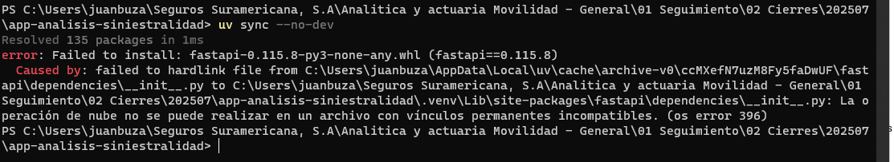
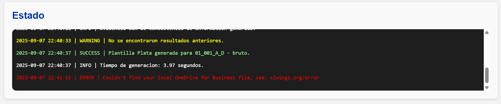
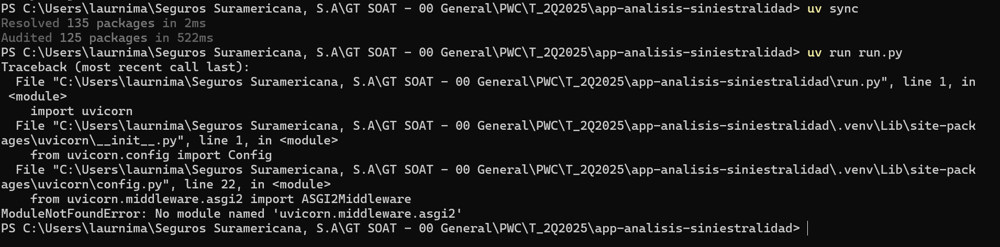
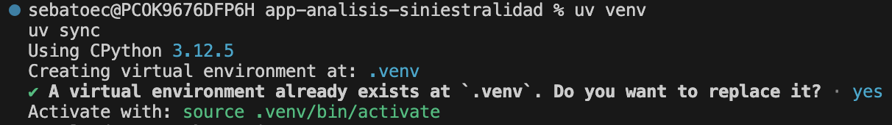

Preguntas y problemas frecuentes
1. Error de hardlink

Descripción del problema
Este error ocurre porque los requisitos de paquetes para la instalación de la aplicación en la nube no coinciden con los que quedaron almacenados en la memoria del sistema a partir de instalaciones anteriores.
Pasos para resolverlo
Limpie la memoria caché del administrador de paquetes ejecutando el siguiente comando:
Una vez limpia la memoria, intente ejecutar nuevamente el comando que le generó el error.
Tip
Limpiar la memoria caché del administrador de paquetes es una buena práctica para borrar información obsoleta.
2. Error de OneDrive/SharePoint

Descripción del problema
Este error ocurre cuando el autoguardado está activado en una plantilla de Excel almacenada en OneDrive o SharePoint. Las funcionalidades de la aplicación dependen en gran medida de la ruta local del archivo, pero al activarse el autoguardado, dicha ruta se transforma en una URL, lo que puede generar conflictos con ciertos comandos.
Pasos para resolverlo
- Desactive el autoguardado en la barra superior de Excel.
- Guarde el archivo.
- Cierre el archivo.
Una vez realizados estos pasos, intente ejecutar nuevamente el comando que estaba utilizando.
Autoguardado desactivado
Recuerde guardar manualmente el archivo cada vez que realice cambios importantes en la estructura de la plantilla.
3. Error de módulo no encontrado

Descripción del problema
Este error se genera cuando las librerías quedaron mal instaladas.
Pasos para resolverlo
En la terminal, ejecute los siguientes comandos:
Si le sale una opción de diálogo como la que se muestra en la imagen, presione la tecla y (yes):

Una vez ejecutados, intente ejecutar nuevamente el comando que estaba utilizando.